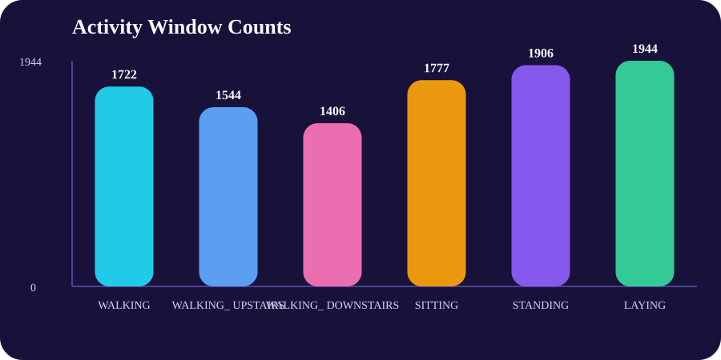
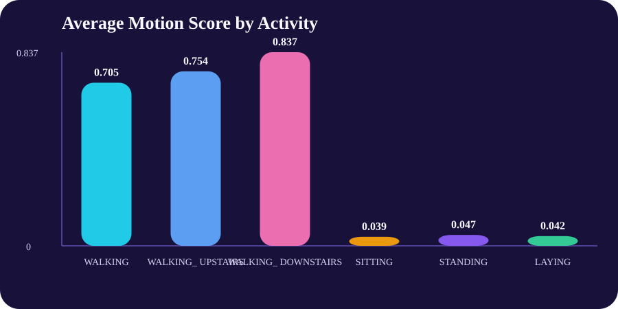
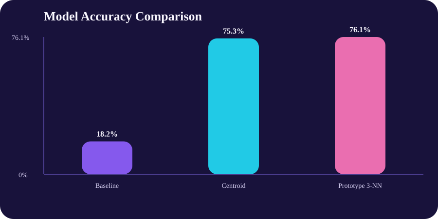

Subjects
30People represented in the source benchmark dataset.
Featured project
This project uses a public inertial-sensor benchmark to classify six movement and posture states. It packages the analysis into a clean, shareable project with downloadable results, reusable data exports, and visuals that connect machine learning to robotics-adjacent sensor work. The problem is relevant to real systems that need fast, reliable recognition of human state from noisy sensor data.
Subjects
30People represented in the source benchmark dataset.
Activities
6Walking and posture states classified by the project.
Best model
3-NNPrototype-based nearest-neighbor classifier.
Best accuracy
76.1%2243 correct predictions on the official test split.
Title
Objective
Use inertial sensor features to classify motion and posture states in a way that demonstrates an end-to-end machine learning workflow relevant to robotics and real-world sensing systems.
Process
I downloaded the UCI Human Activity Recognition dataset, selected 18 accelerometer and gyroscope features, preserved the official training and test split, compared three classifiers, and exported charts and project files for portfolio review.
Tools
PowerShell, CSV data processing, static SVG chart generation, Markdown, HTML, CSS, and GitHub Pages compatible static hosting.
Value Proposition
This project shows that I can work with sensor-heavy datasets, build repeatable classification workflows, and present technical results in a polished public-facing format. That matters for robotics, wearable tech, and monitoring products that depend on clear activity-recognition pipelines.
Best Fit Roles
Relevant for junior machine learning engineer, robotics software engineer, intelligent-device, and sensing-heavy product roles where sensor interpretation affects downstream behavior.
Why It Matters
Activity recognition supports context-aware robotics, wearables, and monitoring systems. This artifact shows I can turn noisy sensor inputs into a useful, explainable classification workflow.
Deliverable Type
Downloadable report, analysis script, feature reference, selected data, results tables, confusion matrix, and SVG visualizations.
Model comparison
The project compares a simple baseline against two distance-based classifiers. Using 18 selected sensor features, both learned models strongly outperform the baseline on the official test split.
| Model | Accuracy | Correct / Total |
|---|---|---|
| Majority activity baseline | 18.2% | 537 / 2947 |
| Nearest centroid classifier | 75.3% | 2220 / 2947 |
| Prototype 3-nearest-neighbor classifier | 76.1% | 2243 / 2947 |
Chart 01
Window counts for the six movement and posture states represented in the dataset.

Chart 02
Higher values indicate more dynamic motion patterns, while static postures stay close to zero.

Chart 03
The two learned classifiers significantly outperform the majority baseline.

Key takeaway
Even with a focused subset of sensor features, the project captures enough structure to separate dynamic activities from static posture states with useful accuracy.
Files
These downloadable files make the project reviewable outside the website itself, which helps it stand on its own as a portfolio-ready machine learning project.
A written summary of the project goals, workflow, tools, and results.
Download ReportThe PowerShell workflow used to download the dataset and generate all outputs.
Download ScriptA reusable CSV export of the selected features, activity labels, and split metadata.
Download Data CSVComparison metrics for the baseline, centroid, and prototype k-NN classifiers.
Download Results CSVThe 18 accelerometer and gyroscope summary features selected for the project.
Download Feature ReferenceA CSV view of how the best-performing model predicted each activity class.
Download Confusion Matrix